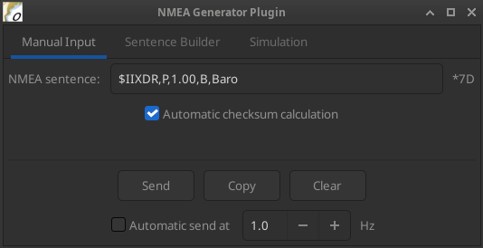
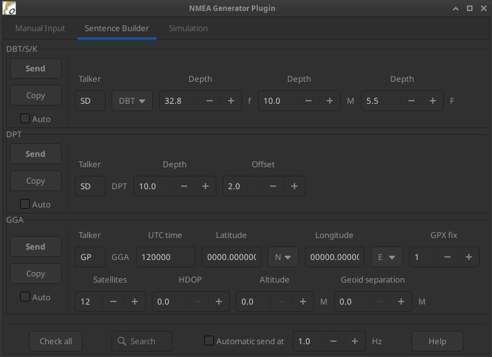
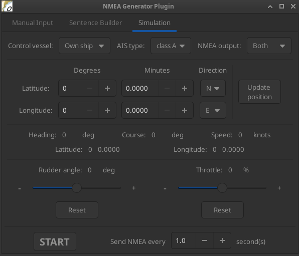

Author
Plugin created by ©Kupofty 2026
Overview
NmeaGenerator is a plugin for OpenCPN which generates and transmits NMEA0183 sentences.
The plugin can be used as a lightweight ship simulator to reproduce realistic navigation behavior inside OpenCPN or for testing UI, other plugins, instruments, etc.
Installation
Method 1: Plugin Manager (Recommended)
-
Open OpenCPN
-
Go to Options → Plugins
-
Update catalog and search for the NmeaGenerator plugin
-
Click Install then Enable
Method 2: Manual Install (Cloudsmith)
-
Go to Cloudsmith
-
Select the correct tarball for your OS
-
Download the
.tar.gzarchive (not the.xml) -
Click on Options → Plugins → Import plugin…
-
Enable plugin in Options → Plugins
Method 3: Build from Source (Github)
Clone the repository:
git clone https://github.com/Kupofty/NmeaGenerator_pi.git
Create the build directory:
mkdir build cd build
cmake .. make tarball
cmake .. -A Win32 cmake --build . --config Release --target tarball
Import the tarball in OpenCPN via Options → Plugins → Import plugin… and enable it.
For more information, see the INSTALL.md file in the GitHub repository.
User Interface
To open the plugin, click on the toolbar icon :
The plugin is divided into multiple tabs:
Manual Input

The "Manual Input" tab lets you type and send any NMEA sentence directly to OpenCPN, making it ideal for testing specific messages independently of the simulation engine, or for validating and debugging data flows.
There is no validation on the content — any sentence will be forwarded as-is. Sentences must start with $ or !. The checksum is optional.
Checksum
The "Add automatic checksum" option computes and appends the correct checksum to your sentence automatically.
When enabled, you can paste a sentence that already includes a checksum and visually compare it with the generated one — the manually written checksum will be stripped before sending.
When disabled, a status message is displayed below the input field indicating whether the checksum is absent, correct, or invalid.
Sentence Builder

The "Sentence Builder" tab provides quick access to the most common NMEA sentences, each with editable fields. Multiple sentences can be sent simultaneously and automatically.
Use the search box to filter sentences by ID, and the vertical scrollbar to browse the full list.
For text input fields, values must follow the official NMEA field format to be interpreted correctly by OpenCPN or external hardware/software.
Controls
| Send |
Sends the selected sentence once to OpenCPN. |
| Copy |
Copies the full sentence to the clipboard. |
| Auto |
Adds the sentence to the automatic send list. |
| Check all / Uncheck all |
Quickly adds or removes all sentences from the automatic send list. |
| Automatic send |
Sends all checked sentences continuously at the specified frequency. Must be enabled for automatic sending to take effect. |
| Help |
Opens external references on NMEA and AIS sentence structures, field definitions, and units. |
Simulation

The Simulation tab generates continuous NMEA data streams to mimic own ship and/or AIS target.
Vessel Selection And Data Outputs
| Control vessel |
Selects which vessel is currently being controlled (own ship or AIS target). The other vessel retains its last speed and rudder angle. |
| AIS type |
Sets the AIS target type: Class A, Class B, or ARPA radar target. |
| NMEA output |
Controls which data is transmitted. Current sends data for the vessel selected in Control vessel only; Both sends data for both own ship and AIS target simultaneously, with both vessels continuously updated in position and heading. |
Vessel Controls
| Initial position |
Set latitude and longitude manually, or right-click on the map to update the position directly. |
| Throttle |
Speed control slider. |
| Rudder angle |
Turn rate slider. |
| Reset |
Returns slider to zero. |
Simulation
| START/STOP |
Starts or stops sending simulation data at the specified rate (adjustable). |
The status labels in the centre of the tab (position, heading, COG, speed) reflect the live data of the vessel currently selected in "Control vessel".
Settings
The plugin can be accessed via Options → Plugins → NmeaGenerator in the OpenCPN toolbar.

Click on "Preferences" to open the settings window.
Remember to click "OK" or "Apply" before closing to save any changes.
Display

| Default tab |
Tab opened by default when the plugin window is launched (only applies if Restore last tab is disabled). |
| Restore last tab |
Reopens the last active tab when launching the plugin, overriding the default tab setting. |
| Restore last window position |
Restores the plugin window to its last position before it was closed. |
| Restore last window size |
Restores the plugin window to its last size before it was closed. |


Notes
Connections
-
NMEA sentences are sent to OpenCPN’s internal data bus. They will be received by any plugin or instrument listening on that bus, including Dashboard, AIS display or third-party plugins.
-
The plugin does not create a serial or network output by default. To forward sentences to external software or hardware, use OpenCPN’s connection settings to create an output connection.
General
-
Multiple NMEA sources may cause conflicts in OpenCPN: ensure sensor inputs and generated data do not overlap.
-
Do not use the plugin during real navigation, or do so at your own risk — it may interfere with critical navigation data and affect system reliability.
-
The outputs of all three tabs (in auto-send mode) are automatically stopped when the plugin window is closed, unless Keep transmitting when window is closed is enabled in Settings.
-
Output can be monitored in the OpenCPN Data Monitor window.
Plugin sentences are prefixed with a "virtual" tag, making them easy to identify.

-
When simulating AIS targets, make sure the MMSI used does not match any real vessel to avoid confusion in AIS displays.
-
Sentence fields left empty or filled with invalid values may be silently ignored or cause unexpected behavior in receiving instruments — always refer to the NMEA reference when in doubt.